| Student name | Jeyaram M |
|---|---|
| Student ID | 2025AE05470 |
| Course | Machine Learning Operations (MLOps), AIMLCZG523 |
| Dataset | UCI Heart Disease (Cleveland), 303 patients, 13 features |
| Final model | Logistic Regression (C = 0.1), CV ROC-AUC 0.911, test ROC-AUC 0.961 |
| Serving | FastAPI in Docker, with Docker Compose and Kubernetes (manifest + Helm) |
| Tooling | scikit-learn, MLflow, pytest, flake8, GitHub Actions, Prometheus, Grafana |
| Repository | https://github.com/callmejei/2025ae05470_assignment |
| Date | 19 October 2026 |
Problem. Predict whether a patient has heart disease from routine clinical measurements, and serve that prediction through a monitored REST API that is ready for the cloud.
Dataset. UCI Machine Learning Repository, Heart Disease, file processed.cleveland.data. It has 303 rows, 13 input features and the label num (0 = no disease, 1–4 = increasing severity). Following the usual convention, num > 0 is mapped to the binary target 1.
| Feature | Description | Type |
|---|---|---|
| age | Age in years | numeric |
| sex | 1 = male, 0 = female | binary |
| cp | Chest pain type (1 typical angina, 2 atypical, 3 non-anginal, 4 asymptomatic) | nominal |
| trestbps | Resting blood pressure (mmHg) | numeric |
| chol | Serum cholesterol (mg/dl) | numeric |
| fbs | Fasting blood sugar > 120 mg/dl | binary |
| restecg | Resting ECG result (0–2) | nominal |
| thalach | Maximum heart rate achieved | numeric |
| exang | Exercise-induced angina | binary |
| oldpeak | ST depression induced by exercise | numeric |
| slope | Slope of the peak exercise ST segment (1–3) | nominal |
| ca | Number of major vessels coloured by fluoroscopy (0–3) | numeric (count) |
| thal | 3 normal, 6 fixed defect, 7 reversible defect | nominal |
src/data.py downloads, de-duplicates and imputes the data, then writes data/processed/heart_clean.csv.Pipeline (preprocessing + classifier). Logistic Regression and Random Forest are tuned with GridSearchCV and 5-fold stratified cross-validation.scripts/ci_local.sh). Any failure stops the pipeline./predict in a slim Python 3.11 image, run with Docker Compose and on Kubernetes (raw manifest and Helm chart).| Model | Accuracy | Precision | Recall | F1 | ROC-AUC |
|---|---|---|---|---|---|
| Logistic Regression (selected) | 0.885 | 0.839 | 0.929 | 0.881 | 0.961 |
| Random Forest | 0.869 | 0.813 | 0.929 | 0.867 | 0.945 |
Prerequisites: Python 3.11, Docker Desktop (with Kubernetes enabled), kubectl, Helm 3, Git.
mlops/ ├── data/ raw/ (downloaded) · processed/heart_clean.csv ├── notebooks/ 01_eda.ipynb · 02_training.ipynb · 03_inference.ipynb ├── src/ config · data · eda · features · train · predict ├── api/main.py FastAPI service (/predict, /health, /metrics) ├── tests/ pytest unit tests (data, model, API) ├── models/ model.joblib · metrics.json ├── k8s/ deployment.yaml (Namespace, Deployment, LoadBalancer Service) ├── helm/heart-api/ Helm chart (Deployment, Service, optional Ingress) ├── monitoring/ prometheus.yml · Grafana datasource + dashboard ├── .github/workflows/ci.yml ├── scripts/ ci_local.sh · capture_screenshots.py · record_demo.py ├── screenshots/ · video/ · report/ ├── Dockerfile · docker-compose.yml · requirements.txt · requirements-api.txt
python -m venv .venv .venv\Scripts\activate # Linux/macOS: source .venv/bin/activate pip install -r requirements.txt python -m src.data # download + clean python -m src.eda # EDA figures -> report/figures python -m src.train # train + MLflow tracking -> models/model.joblib pytest && flake8 src api tests # tests + lint mlflow ui --backend-store-uri ./mlruns --port 5005
docker compose up -d --build # API :8010, Prometheus :9095, Grafana :3005 curl -X POST localhost:8010/predict -H "Content-Type: application/json" -d @sample_request.json
kubectl --context docker-desktop apply -f k8s/deployment.yaml # :8020
helm --kube-context docker-desktop upgrade --install heart-api helm/heart-api \
-n heart-disease-helm --create-namespace # :8030
| Endpoint | URL |
|---|---|
| API, Swagger UI | http://localhost:8010/docs |
| API on Kubernetes (manifest / Helm) | http://localhost:8020/predict · http://localhost:8030/predict |
| Prometheus | http://localhost:9095 |
| Grafana (admin / admin) | http://localhost:3005/d/heart-api |
| MLflow UI | http://localhost:5005 |
src/data.py)requests and cached in data/raw/. The step is idempotent.? is parsed as missing. Only ca (4 rows) and thal (2 rows) have gaps. Both are discrete codes, so they are filled with the mode.num becomes the binary target.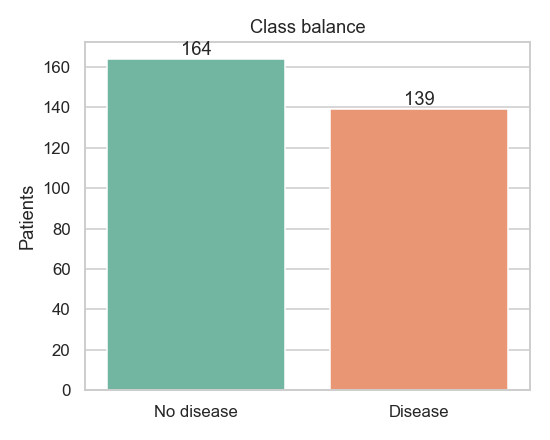
Fig 1. Class balance: close to even, so no resampling is needed
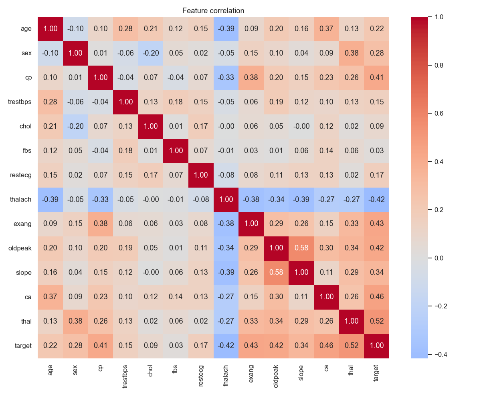
Fig 2. Correlation heatmap
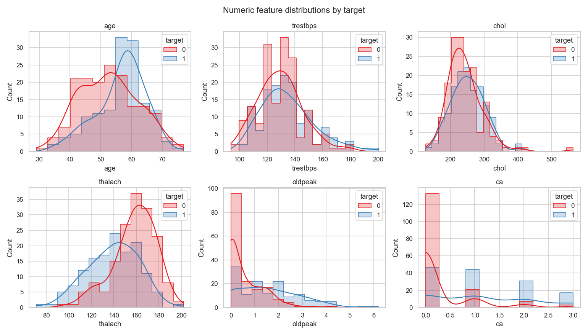
Fig 3. Numeric feature distributions by target (0 = no disease, 1 = disease)
cp, thal, restecg and slope are nominal codes, so they are one-hot encoded rather than treated as ordered numbers.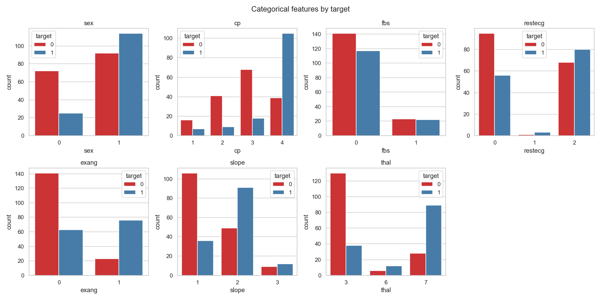
Fig 4. Categorical features by target. Asymptomatic chest pain (cp = 4), reversible defect (thal = 7) and exercise angina stand out.
src/features.py)| Group | Columns | Steps |
|---|---|---|
| Numeric | age, trestbps, chol, thalach, oldpeak, ca | SimpleImputer(median) → StandardScaler |
| Categorical | sex, cp, fbs, restecg, exang, slope, thal | SimpleImputer(most_frequent) → OneHotEncoder(handle_unknown="ignore") |
This gives 25 engineered features. The ColumnTransformer sits inside the same Pipeline as the classifier, so it is fitted only on training folds (no leakage) and the identical transform runs at serving time.
src/train.py)| Model | CV Acc | CV Prec | CV Rec | CV F1 | CV ROC-AUC | Test Acc | Test ROC-AUC |
|---|---|---|---|---|---|---|---|
| Logistic Regression | 0.851 | 0.878 | 0.792 | 0.830 | 0.911 | 0.885 | 0.961 |
| Random Forest | 0.818 | 0.813 | 0.792 | 0.798 | 0.900 | 0.869 | 0.945 |
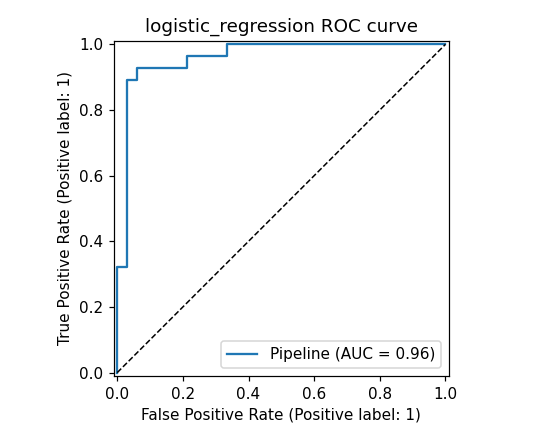
Fig 5. Logistic Regression ROC curve (test)
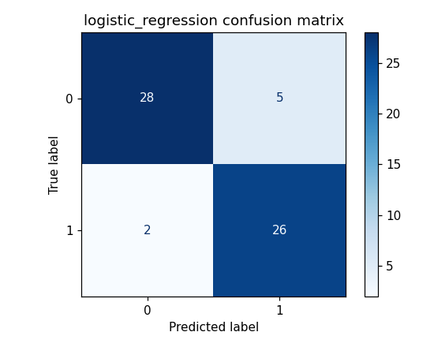
Fig 6. Logistic Regression confusion matrix (test)
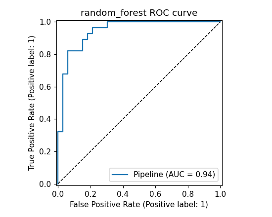
Fig 7. Random Forest ROC curve (test)
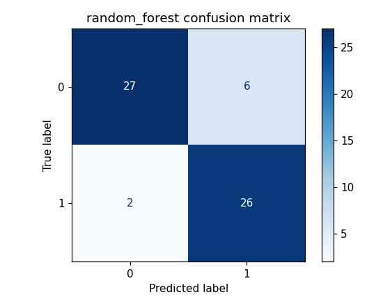
Fig 8. Random Forest confusion matrix (test)
Why Logistic Regression. It scores higher on every cross-validated metric. Its coefficients are directly interpretable, which matters in a clinical setting. It is also tiny and fast to serve. On only 303 rows, the Random Forest's extra capacity adds variance without improving accuracy. Test recall of 0.93 means 26 of 28 disease cases are caught, which is the priority for a screening tool.
MLflow (file store ./mlruns, experiment heart-disease) logs one run per candidate model for each training execution:
Training ran three times (CLI, notebook, local CI) with identical results, which confirms reproducibility with fixed seeds.
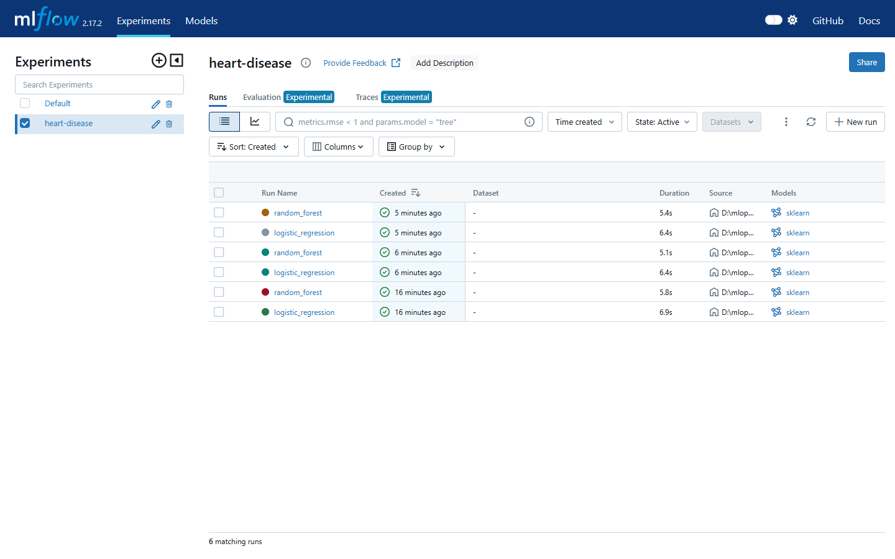
Fig 9. MLflow experiment with all tracked runs
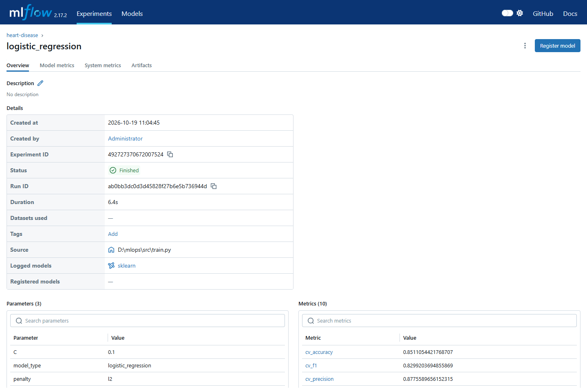
Fig 10. Run detail: parameters and metrics for the selected Logistic Regression
Pipeline (preprocessing + model) is saved to models/model.joblib. The same pipeline is also logged as an MLflow model, with MLmodel, conda.yaml and requirements.txt generated by MLflow.models/metrics.json stores the selected model, the best parameters, the run IDs and all metrics.requirements.txt (training) and requirements-api.txt (serving).RANDOM_STATE = 42 covers the split, the CV folds and the models. The column lists and paths are defined once in src/config.py.src.predict.predict(), the same function the notebooks and CLI use, so training/serving skew is impossible by construction.tests/, 14 tests)| File | What is verified |
|---|---|
| test_data.py | no missing values after cleaning, target binarisation, all features kept, duplicate removal, input not mutated |
| test_model.py | preprocessor output shape and no NaNs, unseen category handled, predict output contract, end-to-end train() with MLflow into a temp dir |
| test_api.py | /health, /predict returns a prediction and confidence plus a request id, 422 on a missing field, 422 on an out-of-range value, /metrics exposed |
.github/workflows/ci.yml)Triggered on push to main, on pull requests, and manually. Job lint-test-train: checkout → Python 3.11 with pip cache → install → flake8 → pytest (JUnit XML) → download data → EDA → train. It uploads test-results.xml, train.log, models/, the figures and mlruns/ as workflow artifacts, even on failure. Job docker (needs the first job): builds the image from the trained model, runs it, and smoke-tests /health and /predict, failing if the response lacks confidence. Container logs are always printed.
scripts/ci_local.sh runs the same steps locally with set -euo pipefail.
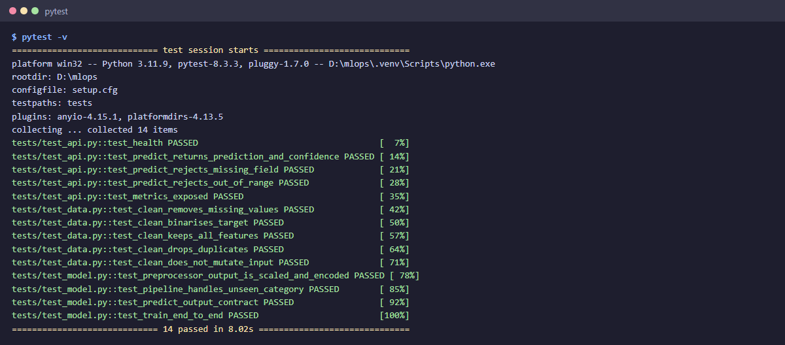
Fig 11. pytest: 14 passed
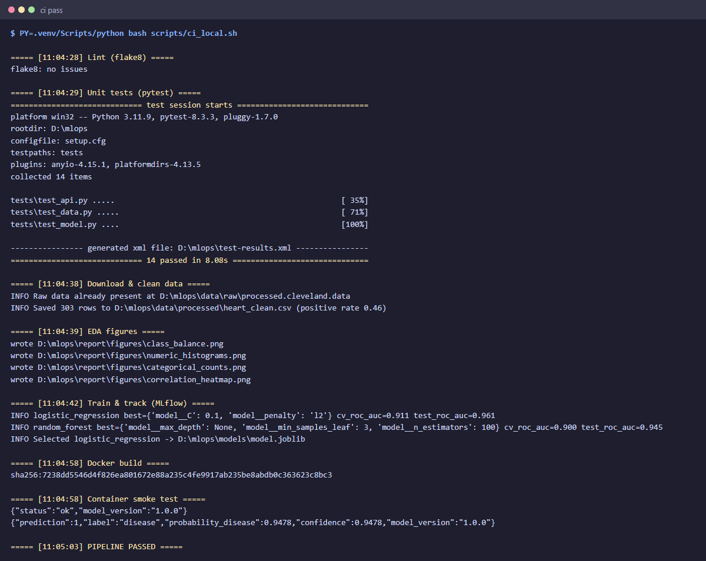
Fig 12. Full pipeline run: every stage passes
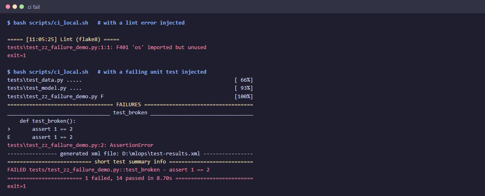
Fig 13. Fail-fast: an injected lint error, and separately a failing test, each stop the pipeline with exit code 1 and clear logs
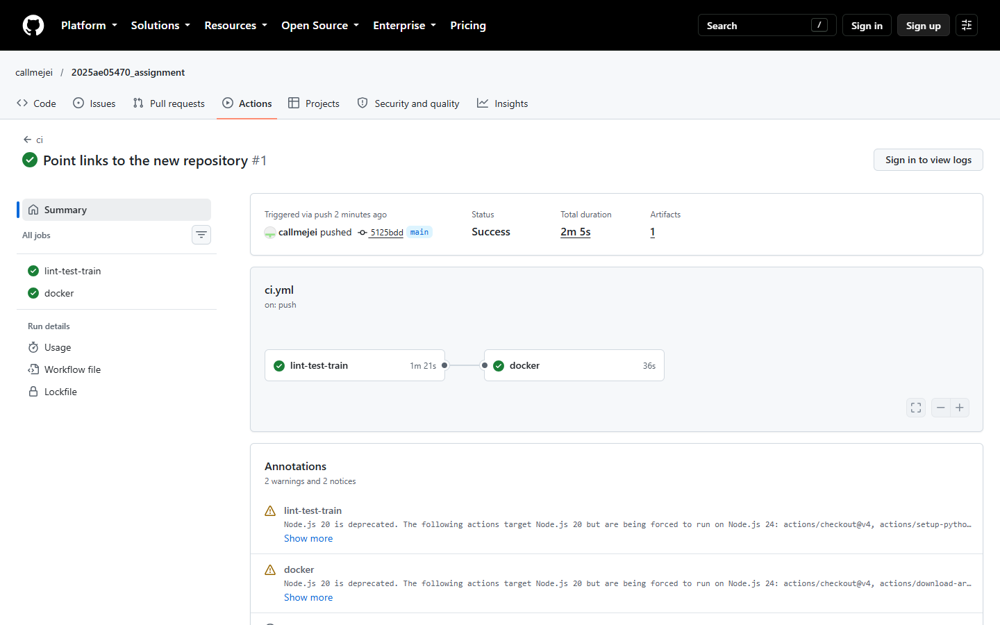
Fig 14. GitHub Actions run on the submission repository: lint-test-train then docker, both green (2 min 5 s, 1 artifact)
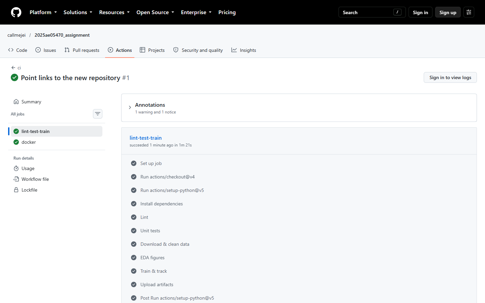
Fig 15. lint-test-train job steps: lint, unit tests, data, EDA, train, artifact upload
During development, the first CI run failed at Unit tests. CI calls pytest directly, which does not put the repo root on sys.path, so import src failed and the data, training and docker steps were skipped (fail-fast). Adding pythonpath = . to the pytest config fixed it. Fail-fast behaviour on lint and test errors is also shown in Fig 16.
python:3.11-slim, runtime dependencies only, non-root appuser, Docker HEALTHCHECK on /health, model baked in at /app/models/model.joblib.POST /predict (JSON in; prediction, label, probability and confidence out), GET /health, GET /metrics (Prometheus), /docs (Swagger).422 with a clear message.x-request-id header for tracing.POST /predict {"age":63,"sex":1,"cp":4,"trestbps":145,"chol":233,"fbs":1,"restecg":2,
"thalach":150,"exang":1,"oldpeak":2.3,"slope":3,"ca":2,"thal":7}
→ 200 {"prediction":1,"label":"disease","probability_disease":0.9478,"confidence":0.9478,"model_version":"1.0.0"}
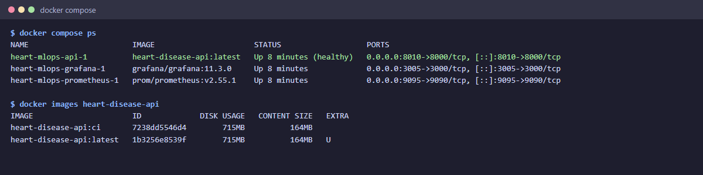
Fig 17. Docker Compose stack: API (healthy), Prometheus, Grafana
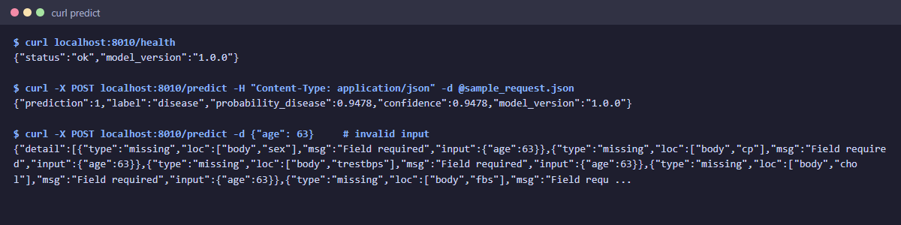
Fig 18. Container proof: health check, a valid prediction, and a rejected invalid request
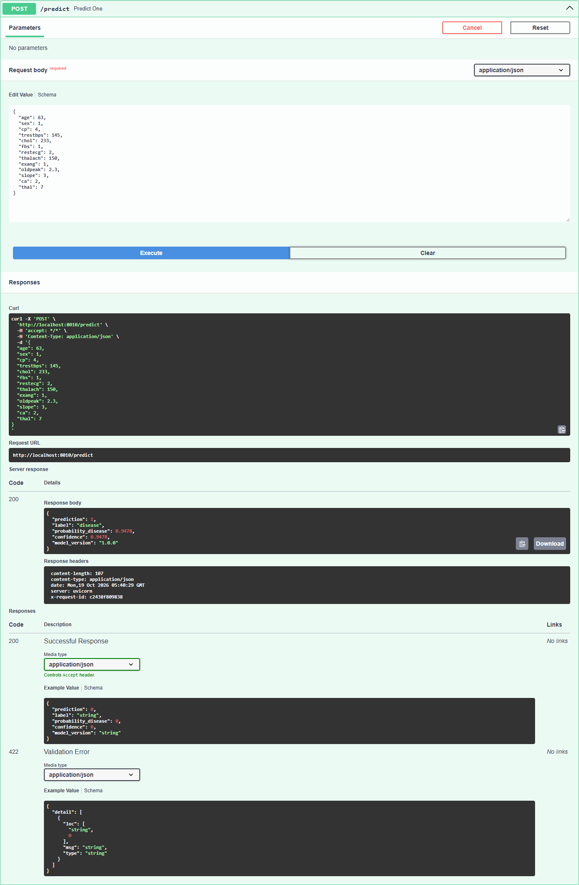
Fig 19. Swagger UI: /predict executed against the container
The target is the local Kubernetes cluster that ships with Docker Desktop (context docker-desktop). The Docker image is used directly with imagePullPolicy: IfNotPresent. Two equivalent deployment methods are provided and both are running:
| Raw manifest | Helm chart | |
|---|---|---|
| Source | k8s/deployment.yaml | helm/heart-api (values.yaml) |
| Namespace | heart-disease | heart-disease-helm |
| Replicas | 2 | 2 (configurable) |
| Exposure | LoadBalancer → localhost:8020 | LoadBalancer → localhost:8030 (Ingress optional) |
Both use readiness and liveness probes on /health, CPU and memory requests and limits, and prometheus.io/scrape annotations. The Helm chart passes helm lint. Moving to a cloud cluster (GKE/EKS/AKS) only means pushing the image to a registry and changing image.repository.
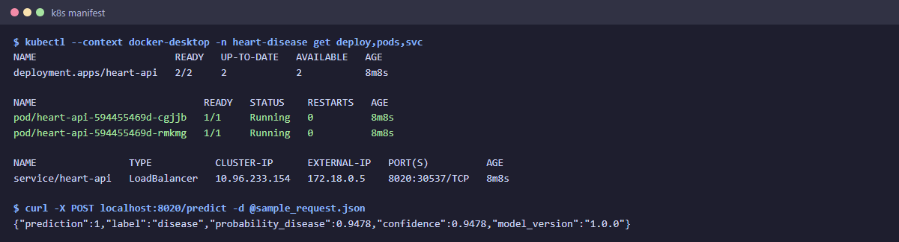
Fig 20. Manifest deployment: 2/2 pods running, LoadBalancer, endpoint verified
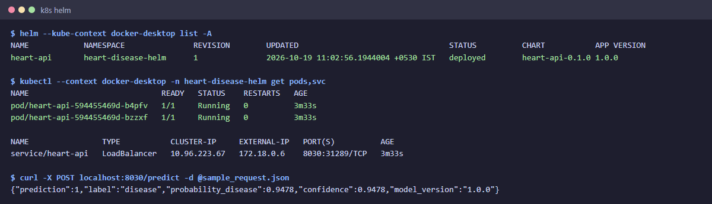
Fig 21. Helm release deployed and verified
docker logs or kubectl logs collect them.api_requests_total{method,endpoint,status}, the histogram api_request_latency_seconds{endpoint}, and model_predictions_total{label} (watches for drift in the class mix).api:8000/metrics every 5 s. Grafana is provisioned automatically with the data source and the "Heart Disease API" dashboard.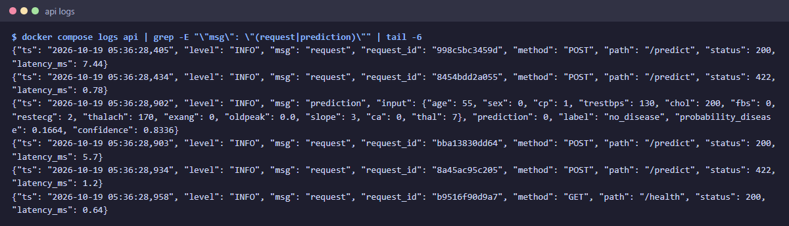
Fig 22. Structured JSON request and prediction logs
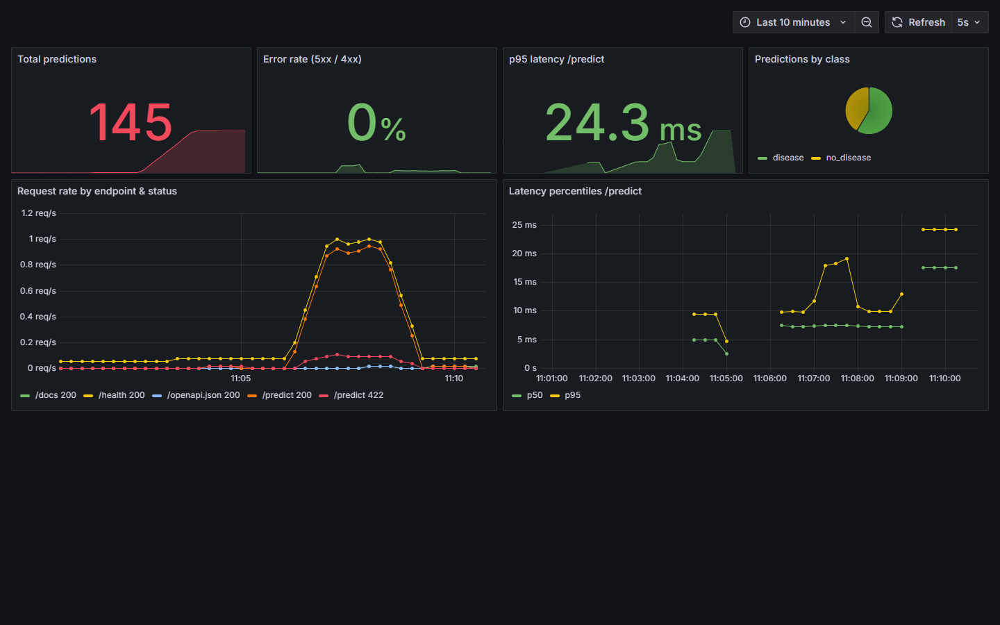
Fig 23. Grafana: total predictions, error rate, p95 latency, class mix, request rate and latency percentiles
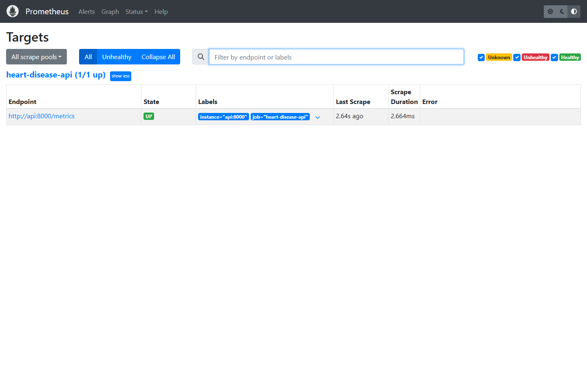
Fig 24. Prometheus target healthy
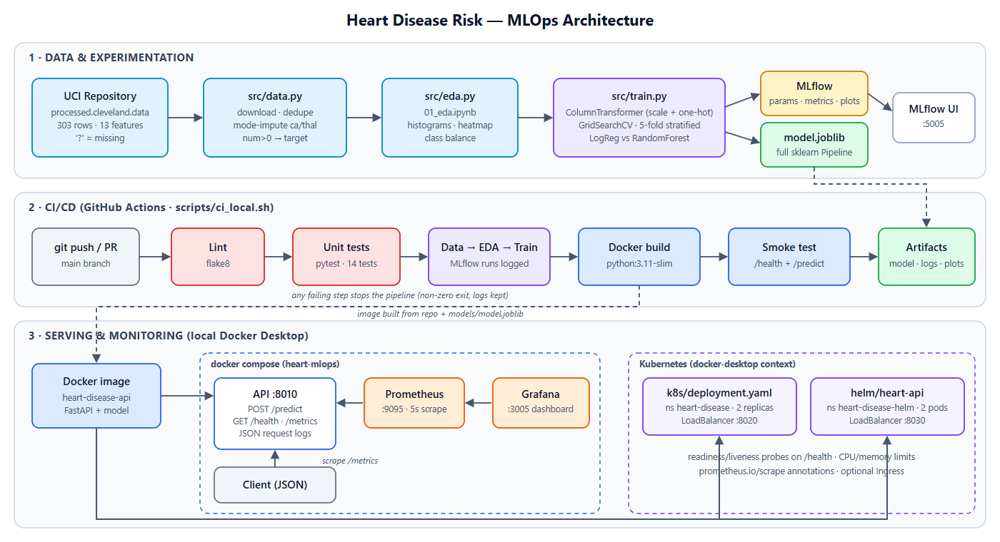
Fig 25. End-to-end architecture
| Deliverable | Location |
|---|---|
| Code, Dockerfile, requirements | src/, api/, Dockerfile, docker-compose.yml, requirements*.txt |
| Cleaned dataset + download script | data/processed/heart_clean.csv, src/data.py |
| Notebooks (EDA, training, inference) | notebooks/01_eda.ipynb, 02_training.ipynb, 03_inference.ipynb |
| Unit tests | tests/ (14 tests) |
| CI workflow | .github/workflows/ci.yml, scripts/ci_local.sh |
| Deployment manifests / Helm | k8s/deployment.yaml, helm/heart-api/ |
| Screenshots | screenshots/ |
| Report | report/report.pdf |
| Access instructions | Section 2 and README.md |
| Pipeline video | video/pipeline_demo.mp4 |
https://github.com/callmejei/2025ae05470_assignment